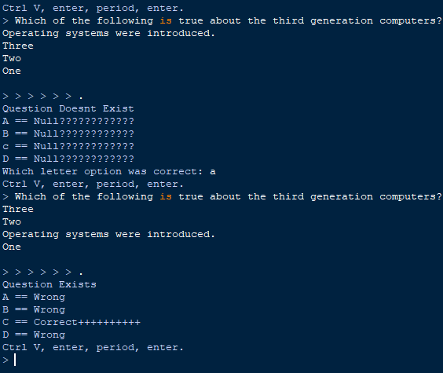
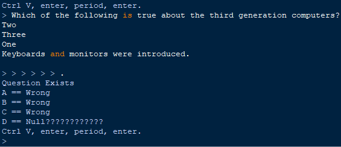
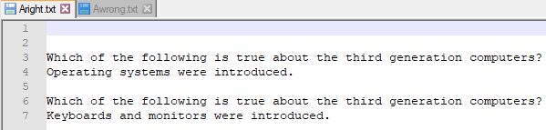
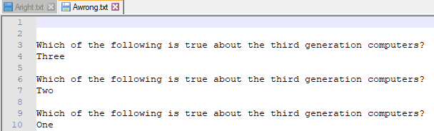

About the Multiple Choice Project
Click for GitHub Repo
Starter Note
This is a python personal project that ended fall 2021 and started late 2019.
I was the only developer on this project.
This project served as a great study buddy when I had a specific repetitive course task to tackle.
The Task Problem
The repetitive task required an attempt to correctly answer multiple-choice questions that could be up to two dozen per sitting. The task could be restarted to answer all of the questions in one go, which is how to get the highest possible score.
Normally the questions and answers were straight forward, but often one could make a silly mistake that will force them to restart.
Another issue is the fact that you are given three wrong answers and only one right answer. You end up spending a lot of time going over those wrong answers when the focus should be on the correct one.
The Ideal Solution
I needed a program that will grab multiple lines of text, extract the question, and each possible answer. The program then needs to know which answer is right, which answers are wrong, and then store that data. In the end, the user should identify which option to select or tell the program which is correct.
The Implemented Tools + Solution
Python 3.6 IDLE to run Python for the logic and input/output.
One text file to store and read the right answers.
A second text file to store and read the wrong answers.
Procedural Logic Steps:
1. Prompt user to paste the question and options.
2. Break the user data into lines and hold each line into its own variable.
3. Read both text files to see if the question and each option already exists.
4. Display each option and the corresponding results to the user.
5. If an option is found in the right file, then append the rest to the wrong file. Go to Step 8.
6. If no options are in the right file and two or more options are not found in the wrong file, prompt the user to input which option is correct and store the results accordingly. Go to Step 8.
7. If three options are found in the wrong file but one option is not found at all, append the only option that is not wrong to the right file.
8. Reloop the program for the next input by the user.
Benefits
-Choice Selection Accuracy
-Task Time Efficiency
-Focus on the Correct Answers
Final Thoughts
Honestly, the 90% successful execution rate for this program delivered useful results, but that 10% failure can become inconvenient and reduced productivity towards the real task at hand. That failure is mainly due to reading and comparing encoded text. In the end, the functional results left me in a positive state, but I know this program can be improved.
Program Output
-Screenshot: Clean Run with New Question
Screenshot: Same Run with Same Question but Different Answer
Screenshot: Right File Data After Run
Screenshot: Wrong File Data After Run
Click for GitHub Repo